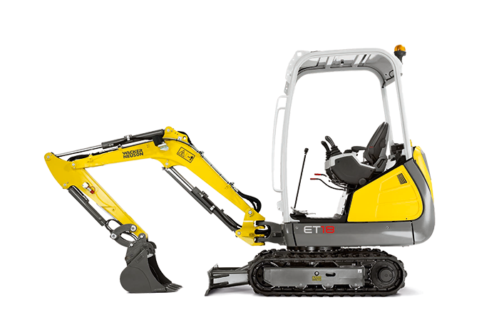

Bagruj morava
Zemní a výkopové práce

začínáme na 24 Kč/km
XMožnost domluvit přepravu vykopaného materiálu nebo přepravu materiálu pro stavbu (kamínek, drť, písek apod).
začínáme na 550 Kč/h
XProvádíme výkopové a zemní práce novým minirypadlem Wacker Neuson et18. Ideální na výkopy základových desek rodinných domů, bazénů nebo srovnání terénu zahrad.
začínáme na 650 Kč/h
XZaměřujeme se především na demolice objektů (rodinné domy, garáže a drobné stavby) a bourání zpevněných betonových či asfaltových ploch.
Jsem hrdý otec dvou dětí s dlouholetými zkušenostmi v oboru. Po několika letech v práci s vrtnou soupravou jsem se rozhodl splnit si dávný sen, pořídit vlastní minibagr a stát se sám vlastním zaměstnavatelem. Provadím zemní a demoliční práce všeho druhu.
Díky malé šířce projedu i 110 cm širokým prosorem a zvládnu vykopat až 240 cm hluboký výkop. Samozřejmě ve výbavě nechybí 100 cm hydraulická svahovací lžíce, 30 cm a 60 cm podkopové lžíce, půdní vrtáky a bourací kladivo.